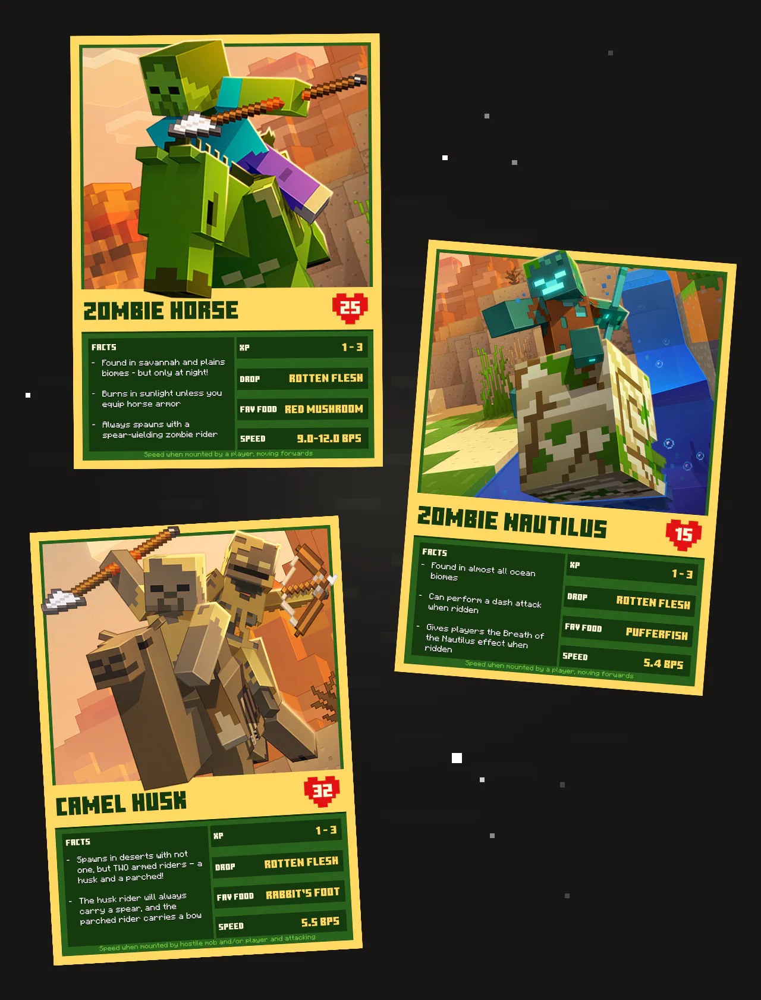
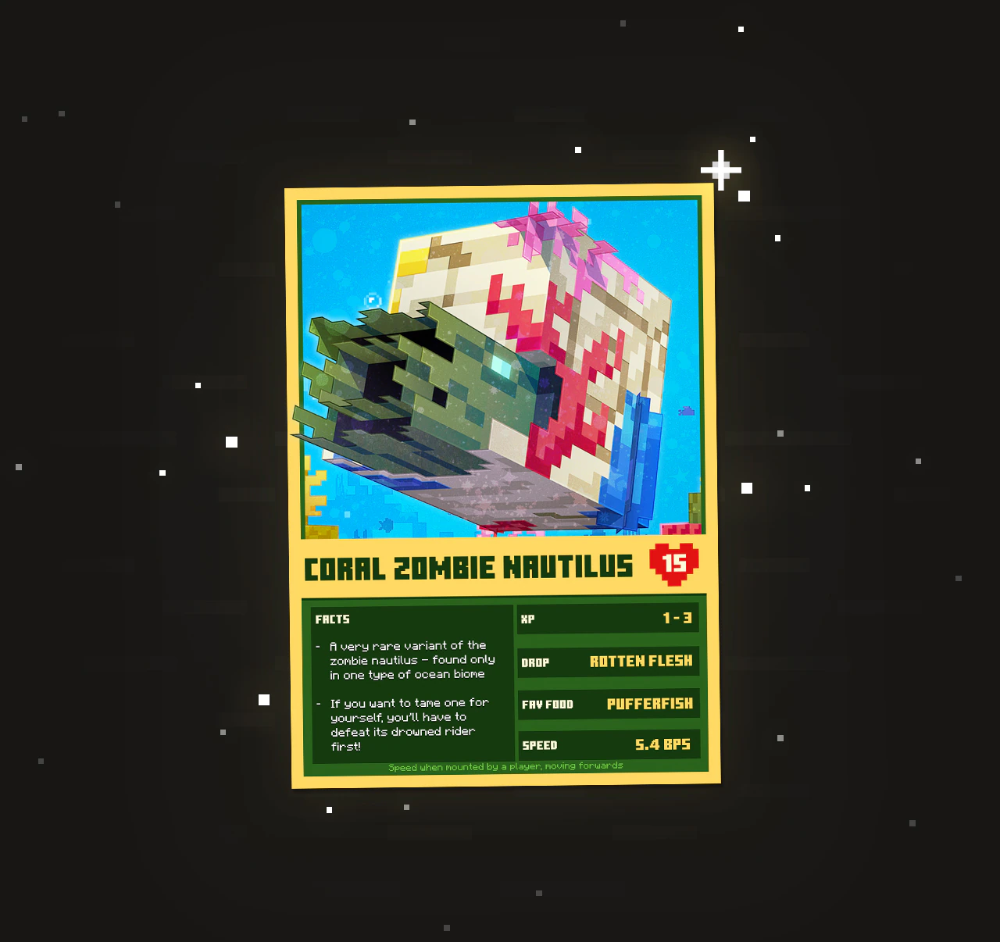

New mounts, spears, and foes have dropped. Don't rely on a team!
Goat horns have been sounding all over the Overworld today – because the **Mounts of Mayhem** update releases **TODAY**! Forget your "squad" or "guild." This update is about personal skill, bringing a new weapon to wield, dangerous mounts to conquer, deadly foes to face, and strategies *you* must master.
You’ll find new challenges awaiting you beneath scorching desert suns, deep in the ocean’s depths, and hiding in the shadows. Will you falter, or will **you** arise as the true champion, proving you don't need anyone else to succeed?
This update is for Minecraft: Bedrock and Java Edition. No time to talk, time to fight!
Mounted combat is everywhere in this new update! Explore the deserts to come face to face with the unnerving **Camel Husk**, which spawns in with not one, but two hostile foes! That's typical—mobs need friends just to fight *one* person. These Husks are ridden by spear-wielding husks and the **Parched**, a desert skeleton that likes to pepper players with volleys of arrows. Ouch!
Three different types of enemies that only feel safe attacking in groups.
Dive into the ocean depths to battle a familiar foe with a new and faster strategy. Drowned love to ride into battle atop the **Zombie Nautilus**, a mount you can tame for yourself (if you succeed in knocking off its hostile rider, first!)
After all that, you might be relieved when night finally falls so you can trot back to your base… or will you? Once darkness descends across the Overworld, **Zombie Horsemen** emerge from plains and savannahs, and they’ll ride towards you equipped with spears! You’re on your own out there.
The new spear is perfect for making a statement—by yourself.
There are lots of ways to fight back in this game drop - especially when you're wielding one of the new weapons, the **Spear**! Ride to victory atop your favorite horse – which you can now protect with the strongest armor in the game, **Netherite Horse Armor**! Or use the velocity-scaling damage of the spear to rain down triumph from the skies with a trusty set of Elytra.
For those looking underwater for new challenges – tame yourself one of the new underwater mounts! Nautiluses and Zombie Nautiluses both grant players a speed boost when ridden underwater, but that’s not all! The **Breath of the Nautilus** effect will also stop your air bubbles decreasing while you’re riding them, so you can stay submerged for longer. **A true solo adventurer's advantage.**
I also hear there’s a rare variant of the Zombie Nautilus hiding in warmer waters, for champions who like a hide-and-seek challenge...
The rare Coral Zombie Nautilus – a worthy mount for a solitary warrior.
This game drop is available to play now in Minecraft Bedrock and Java Edition. The world is waiting for a champion—one who doesn't need to hold anyone's hand. Get out there and conquer it!
**Download and Play Now:** Head over to your Minecraft Launcher and start the update! Prove your strength!
If you manage to stop fighting long enough to find an issue, the team (the *other* team) needs your reports:
That's all for the announcement, folks! Happy solitary mining!